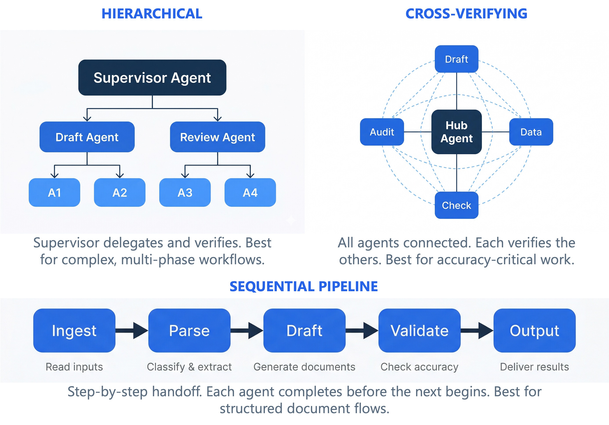
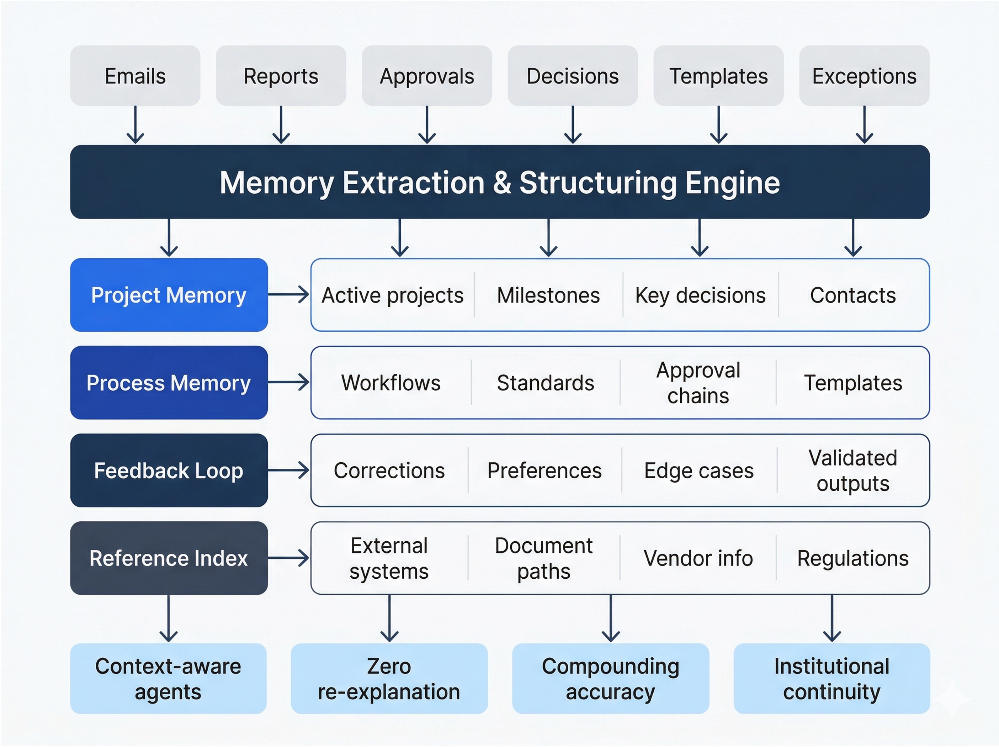

Custom-built AI agents, structured company memory, and multi-agent architecture — designed around your workflows, deployed inside your environment, and compounding in value every day they run.
Construction isn't a production line with a fixed sequence, and it's not a software repo with clean version control. A single GC manages thousands of documents across dozens of trades — RFIs, submittals, change orders, daily logs, field reports, coordination drawings, specs, permits, and insurance records — all flowing between owners, architects, subs, and inspectors simultaneously. The volume and complexity of data that needs to be tracked, cross-referenced, and acted on is unlike almost any other industry.
On top of that, the decisions being made aren't routine. They require professional engineering-level judgment — structural implications, code compliance, schedule interdependencies, liability exposure. A missed reference or a wrong classification doesn't just waste time, it creates risk. Generic AI tools can't operate at this level of domain specificity and decision quality.
Bridging this gap requires more than a chatbot. It requires specialized agents that understand construction workflows, a memory system that can handle the scale and complexity of real project data, governed execution that respects approval chains, and outputs that meet the documentation standard of professional practice.
That's what ForgeLinks builds.
Construction runs on email. Our agents start there — and handle the entire chain from reading a message to filing the final document.
The agent monitors your project inbox, reads incoming emails and attachments, extracts the intent — an RFI request, a change order, a scheduling conflict — and combines it with company memory and project context to determine what needs to happen next. It sets its own task goals, not from a script, but from understanding the situation.
The agent searches your company database, indexes through project files, pulls data from Excel spreadsheets, online systems, and shared drives. It identifies what information is available, what still needs to be gathered, and what's missing — then assembles everything needed to complete the task.
With all the data in hand, the agent auto-fills PDF forms, drafts RFIs, generates invoices, prepares compliance documents, and produces structured reports — all formatted to your company's standards with proper references, spec sections, and drawing numbers.
The agent drafts response emails, routes documents to the right colleagues for review, schedules follow-ups, and manages the coordination chain across your team — PMs, supers, subs, and office staff. Everything stays in the loop, nothing gets dropped.
Different workflows demand different structures. A one-size-fits-all assistant can't handle the complexity of real business operations. ForgeLinks designs agent systems that match the actual shape of your work.
Some workflows need parallel agents processing high-volume intake simultaneously. Others require agents working from shared context — interpreting, drafting, validating, and supporting approvals in coordinated stages. Some need hierarchical structures where specialized agents handle distinct phases of a complex process.
We don't force your business into a template. We architect the agent collaboration pattern that fits your process, your team structure, and your decision flow.

Your company already produces valuable operational knowledge every day — emails, reports, approvals, project records, recurring exceptions, templates, and daily decisions. Most of it stays trapped in inboxes, spreadsheets, and people's heads.
ForgeLinks transforms that fragmented knowledge into a structured company memory layer. This memory lives inside your business, is accessible to your AI agents, and compounds over time. It reduces repeated explanation, improves accuracy, preserves institutional knowledge through staff transitions, and creates reusable internal datasets for future workflows.
Better models will always be available. But long-term advantage comes from having structured internal data, process history, and usable company memory. Companies that start building operational memory now will be better positioned when AI becomes more deeply integrated into every part of business operations.

ForgeLinks builds inside your approved boundary — your infrastructure, your environment, your rules. Your internal documents, permissions, review processes, and governance requirements shape every aspect of the deployment.
This isn't "security" in the abstract. It's operational control in practice: sensitive project data stays where it belongs, AI execution respects your approval workflows, critical business knowledge doesn't flow through third-party platforms, and every output is traceable back to its source.
The result is an AI system your compliance team, your legal counsel, and your operations leaders can actually trust — because it was built around their requirements from day one.
A customized AI workforce does more than save time. It fundamentally strengthens how your company operates.
Every document, every process, every handoff follows the same standard — regardless of who's involved or how busy the team is. AI agents don't have off days.
When people leave, critical process knowledge leaves with them. A structured company memory layer retains institutional knowledge and makes it available to every future team member and AI system.
Grow your project volume without proportionally growing your admin overhead. AI agents scale with your workload while maintaining documentation quality and follow-through.
Approvals happen in order. Documentation is complete. Follow-ups don't slip. A disciplined AI layer enforces the operational rigor that's hard to maintain manually under pressure.
A complete internal AI operating layer — not a demo, not an experiment, but a production system built for your company's actual work.
Role-based AI agents designed for your specific workflows — project admin, billing, compliance, coordination, or any process that runs on documents and decisions.
Structured company knowledge bases built from your operational data — project records, templates, past decisions, recurring exceptions, and institutional standards.
Workflow pipelines that respect your review chains, permission structures, and sign-off requirements. Nothing leaves the system without human authorization.
Agents that synthesize information across emails, reports, contracts, specs, and field data — producing outputs that reference and reconcile multiple sources.
Professional documents, reports, dashboards, and records — formatted, referenced, and ready for review. JSON, PDF, markdown, or whatever your systems need.
Every workflow run produces structured data that feeds future operations — building a proprietary knowledge asset that grows with your company.
This isn't a product demo — it's a strategy conversation. Let's discuss your workflows, your environment, and what a private AI operating layer could look like for your company.
Schedule a Strategy Session →